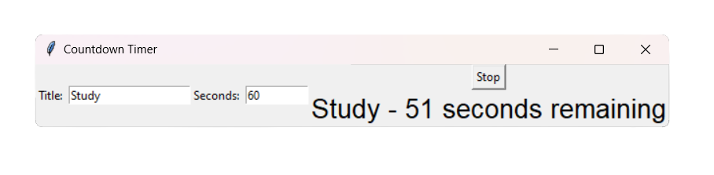
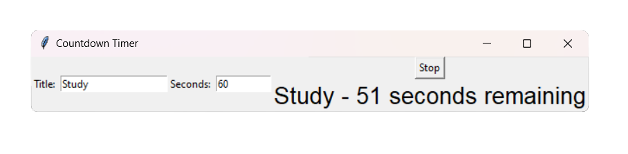
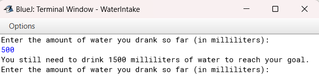
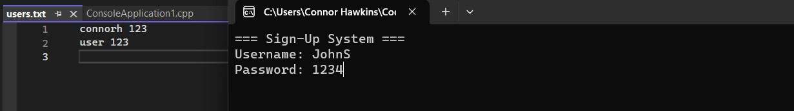
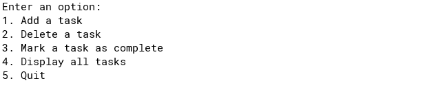

September, 2019
Back in 2019 I began to create small projects for websites such
as desktop notifier using Python. Doing this allowed me to gain knowledge
towards Python, whilst studying the art of GUI for future projects.
 

The Project Countdown is a Python based application built using Pycharm. It contains a GUI, allowing the user to enter a title such as "Study", as well as a timer once opened up. Once active,
the countdown will begin, playing relaxing study music for the user to enjoy as the countdown begins. Other functions include the ability to pause and resume the timer when necessary. Doing this will also pause and resume the music, depending on what the user chooses. To find out more,
visit the GitHub link below!

WaterIntake is a Java-based application. In this application, the user is allowed to set a goal for their daily waterintake. The default is set to 2000 in millilitres.
Once run, the user will then have to input how much they have taken-in today in millilitres.
If the users input is the same or larger than the set goal, they will get congradulated, knowing they have reached their target. If not, the user will be greeted with a message telling them how much more water they need to intake in order to reach their goal. To find out more, visit the GitHub link below!

Signup Console is a C++ based project compiled with Visual Studio. Within this project, there are 2 different sections that are distinctive, the main console, and the users.txt file. When the user runs this program, they are able to enter a username and password into the syatem. Doing this will then store each componenent within the users.txt file. However, if the user inputs the same username, an error will appear, making sure there are no copies of the same account signup. To find out more, visit the GitHub link below!

This ToDo List is a Java based program which allows the user to create their own personal ToDo List. Once the user rusn the application, they will be greeted with 5 different options; Add Task, Delete Task, Mark Task As Complete, and Display All Tasks. However, there is another additional option, being to exit the program, doing this will terminate the program all together, clsoing it down for the user when they are finished. To find out more, visit the GitHub link below!